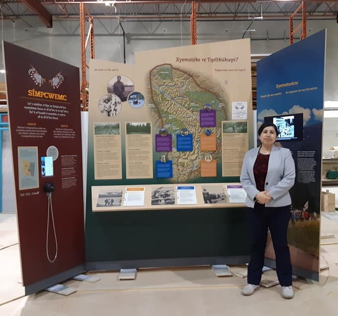

10 years of Design in Production, Prepress, Coordination
"The opposites, art and administration,
are a killer combo.
I have coordinated design teams, and I'm able to
succeed as an independent remote designer or as a
team player that clearly communicates with others
integrating design teams and orientating people to
succeed though time administration and collaborative
positive feedback."
Mariely
I have expertise in several fields that go from arts, technology, administrative and manager competences. She has been involved in the sample production , fabrication, large format printing, and museum quality control.
Abilities
I have been part of the team that produced Wanuskewin museum, every year from places outside of Canada. They come to Wanuskewin to learn about early North American civilization and to celebrate First Nations culture. With artifacts that predate the ruins of Rome and the pyramids of Egypt, Wanuskewin stands alone as a window into some of the continent's earliest inhabitants.
I have also been part of the team that produced Manitoba Museum. A Winnipeg institution since 1970, the Museum has educated generations of Manitobans, as well as national and international visitors to our City. The responsibility of telling a people's and a geography's story is an important one; one that requires a lot of thought and attention to detail.
Produce samples before starting production

Testing PMS colours to ajust clients expectations and get the printers in the same page in every format, milwork paint, direct to surface print, large format print, ink density and uniformity in design
Fabrication

Coordinating with graphic design department and produce photographic recards in large format mediums like vinyl, textile and directo print to wood.
Large format print

Coordinating with graphic design department and produce photographic recards in large format mediums like vinyl, textile and directo print to wood.
Quality Control

Revieve and analize all pieces from the providers and recognize color variations, organize materials in batches to produce in batches, this helps the providers not get to overwhelmed with untackable ammoun of pieces in a specific deadline, so we prioritize sectoning by gallery
Having Fun!
We are a team of professionals, but at heart we will always be kids, and though we prioritize the work, the experience needs to be fun, we are creating a fun experience for others, with respect and joy, and we will work in the same manner to archieve team cohesion.